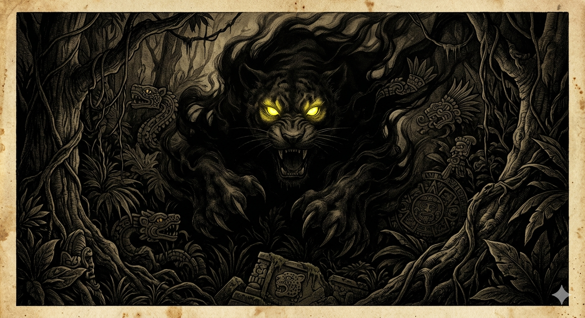
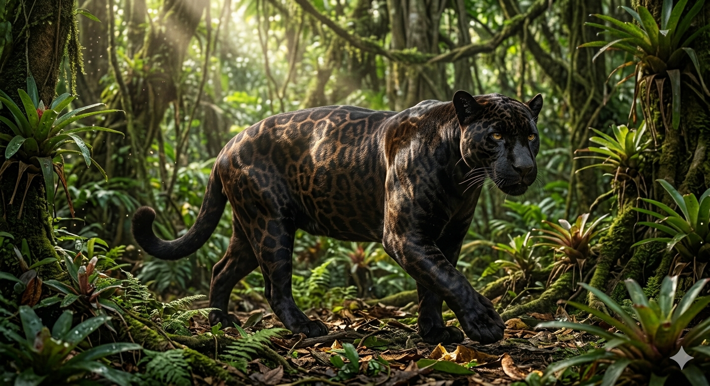

הפנתר השחור
מחתול הצללים המיתולוגי לתעלומה הגנטית של הג'ונגל
מחקר אטימולוגי: מקור השמות
מקור השם (טקסונומיה ופולקלור): Panthera
בניגוד לחיות קודמות שחקרנו, "פנתר שחור" אינו שם של מין ביולוגי ספציפי, אלא מונח מטריה. השם מתייחס לסוג הטקסונומי שאליו שייכים החתולים הגדולים (אריות, נמרים, יגוארים וטיגריסים):
- Panthera (יוונית): אטימולוגיה עממית עתיקה פירשה את המילה ביוונית כהלחם של Pan (הכל) ו-Ther (חיית טרף), כלומר "חיית הטרף האולטימטיבית שאוכלת הכל". עם זאת, בלשנים מודרניים מאמינים שהמקור הוא למעשה מהשפה ההודו-איראנית העתיקה Pandara, שפירושה "צהבהב-לבן", המתאר את הפרווה הבסיסית של רוב החתולים הגדולים.
השם המדעי לתופעה: Melanism (מלניזם)
- Melas (יוונית): התופעה שיצרה את אגדת הפנתר השחור נקראת מלניזם, הנגזרת מהמילה היוונית Melas (μέλας) שפירושה פשוט "שחור" או "כהה". זוהי תופעה הפוכה לאלבניזם (לבקנות).
המיתוס: רוחות היער ואלילים דמוניים
במשך מאות שנים, חוקרים אירופאים וילידים מקומיים כאחד היו משוכנעים שהפנתר השחור הוא מין נפרד ועליון של חתול טרף. באמריקה המרכזית, האצטקים האמינו שמדובר בהתגלמותו של האל טפייולוטל (Tepeyollotl) – "לב ההר", אל המערות, ההדים והחשכה, שהופיע כיגואר שחור המביא רעידות אדמה.
באסיה ובאפריקה, ציידים ויקטוריאניים במאה ה-19 דיווחו ביראה על "חתול צללים" שהוא אגרסיבי, חכם וקטלני יותר מכל נמר רגיל. הם האמינו כי הצבע השחור הוא עדות לאופיו השטני, ותיעדו אותו בספריהם כמין נפרד, נדיר ומסוכן במיוחד.
המיתוס הופרך הדרגתית רק במאה ה-20, עם התפתחות חקר הגנטיקה של אוכלוסיות (בעיקר בעבודותיהם של חוקרים כמו הביולוג האבולוציוני ג'יי. בי. אס. הלדיין - J.B.S. Haldane, 1892–1964). מדענים גילו לתדהמתם כי באותה המלטה של יגוארית רגילה (מנומרת), יכולים להיוולד גור אחד מנומר וגור אחד שחור לחלוטין.
המציאות: שגיאת קוד עם יתרון הישרדותי
האגדה: מין נפרד של "חתול-על" שחור, הרואה בחושך טוב יותר מכל חיה אחרת ושואב את כוחו מהצללים.
המציאות: פנתר שחור הוא למעשה נמר (Leopard - באסיה ואפריקה) או יגואר (Jaguar - באמריקה) שיש לו מוטציה גנטית בגן ה-Agouti (השולט על פיזור הפיגמנט בפרווה). המוטציה גורמת לייצור מוגבר של מלנין, שצובע את כל פרוותו בשחור. אצל יגוארים זהו גן דומיננטי, ואילו אצל נמרים זהו גן רצסיבי (נסגני).
מאפיינים ביולוגיים: סוד החברבורות הנסתרות
- "חברבורות רפאים" (Ghost Rosettes): האמת המדהימה היא שהפנתר השחור הוא עדיין מנומר! הפרווה הבסיסית פשוט כהה כל כך שהיא ממסכת את הכתמים. אם מאירים עליו בפנס, מצלמים אותו במצלמת אינפרא-אדום, או צופים בו באור שמש ישיר ובהיר – ניתן לראות בבירור את החברבורות המסורתיות מתחת לשחור.
- יתרון הישרדותי (קריפסיס): המלניזם נפוץ מאוד (עד 11% מהאוכלוסייה) באזורים של יערות גשם סבוכים וחשוכים, כמו חצי האי המלאי (מלזיה) או האמזונס. הסיבה לכך היא שהצבע השחור מעניק להם הסוואה טובה יותר בצללים הצפופים, לעומת נמרים החיים בסוואנה הפתוחה והמוארת.
זואולוגיה ומחזור חיים (תעודת זהות מורחבת)
נמר שחור (אסיה/אפריקה): קטן יותר. זכרים 37-90 ק"ג, נקבות 28-60 ק"ג.
תיעוד חזותי (לחץ להגדלה)

המיתוס: "חתול הצללים הדמוני"

המציאות: "חברבורות הרפאים" מתחת לשמש